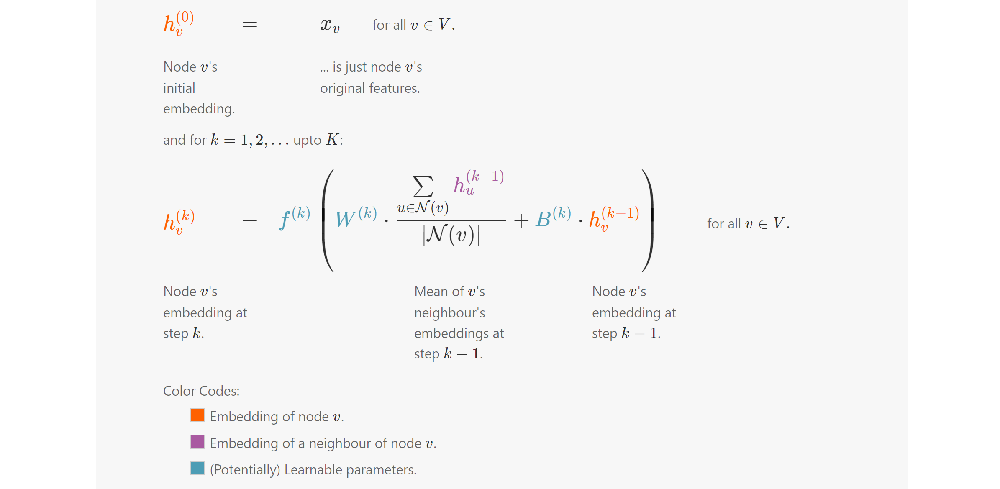
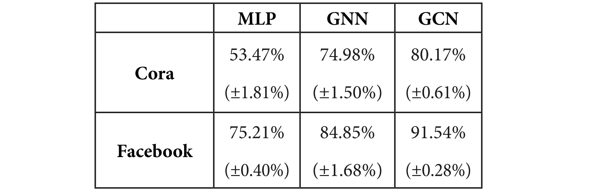

Graph Convolutional Networks#
The Graph Convolutional Network (GCN) architecture, introduced by Kipf and Welling in 2017, is an efficient variant of Convolutional Neural Networks (CNNs) applied to graphs. It approximates a graph convolution operation in graph signal processing and has become the most popular Graph Neural Network (GNN) in scientific literature due to its versatility and ease of use.

This chapter discusses the limitations of a vanilla GNN layer and explains the motivation behind GCNs. It details how the GCN layer works and why it performs better, demonstrated through implementations on the Cora and Facebook Page-Page datasets using PyTorch Geometric.
Overview of GCNs#
Graph Convolutional Networks (GCNs) extend the concept of convolutional networks to graph-structured data. The key idea is to perform convolution operations on graphs, which allows the model to learn localized features from neighboring nodes.
Motivation#
While traditional Convolutional Neural Networks (CNNs) operate on grid-like data (like images), many real-world applications involve non-Euclidean structures, such as social networks, molecular structures, and citation networks. GCNs provide a way to leverage the connectivity information in these graphs to extract meaningful patterns.
GCN Layer Definition#
A GCN layer is defined as follows:
Where:
\( \mathbf{H}^{(l)} \) is the matrix of node representations at layer \( l \).
\( \tilde{\mathbf{A}} \) is the modified adjacency matrix.
\( \mathbf{H}^{(l-1)} \) is the matrix of node representations from the previous layer.
\( \mathbf{W}^{(l)} \) is the weight matrix for layer \( l \).
\( \sigma \) is an activation function (commonly ReLU).
Modified Adjacency Matrix#
The modified adjacency matrix \( \tilde{\mathbf{A}} \) incorporates self-loops to include the node’s own features in the aggregation:
Where:
\( \mathbf{I} \) is the identity matrix, ensuring that each node’s own features are included in the update.
To maintain numerical stability and ensure that the updated representations have a manageable scale, we usually normalize \( \tilde{\mathbf{A}} \) as follows:
Where \( D \) is the degree matrix of the graph, with \( D_{ii} = \sum_j \tilde{A}_{ij} \).
GCN Layer Operation#
Aggregation: The initial representation of a node is transformed by its neighbors, including itself:
Activation: After the aggregation step, an activation function is applied to introduce non-linearity:
import torch
!pip install -q torch-scatter~=2.1.0 torch-sparse~=0.6.16 torch-cluster~=1.6.0 torch-spline-conv~=1.2.1 torch-geometric==2.2.0 -f https://data.pyg.org/whl/torch-{torch.__version__}.html
torch.manual_seed(1)
torch.cuda.manual_seed(1)
torch.cuda.manual_seed_all(1)
torch.backends.cudnn.deterministic = True
torch.backends.cudnn.benchmark = False
import numpy as np
np.random.seed(0)
D = np.array([
[3, 0, 0, 0],
[0, 1, 0, 0],
[0, 0, 2, 0],
[0, 0, 0, 2]
])
np.linalg.inv(D)
array([[0.33333333, 0. , 0. , 0. ],
[0. , 1. , 0. , 0. ],
[0. , 0. , 0.5 , 0. ],
[0. , 0. , 0. , 0.5 ]])
np.linalg.inv(D + np.identity(4))
array([[0.25 , 0. , 0. , 0. ],
[0. , 0.5 , 0. , 0. ],
[0. , 0. , 0.33333333, 0. ],
[0. , 0. , 0. , 0.33333333]])
A = np.array([
[1, 1, 1, 1],
[1, 1, 0, 0],
[1, 0, 1, 1],
[1, 0, 1, 1]
])
print(np.linalg.inv(D + np.identity(4)) @ A)
print()
print(A @ np.linalg.inv(D + np.identity(4)))
[[0.25 0.25 0.25 0.25 ]
[0.5 0.5 0. 0. ]
[0.33333333 0. 0.33333333 0.33333333]
[0.33333333 0. 0.33333333 0.33333333]]
[[0.25 0.5 0.33333333 0.33333333]
[0.25 0.5 0. 0. ]
[0.25 0. 0.33333333 0.33333333]
[0.25 0. 0.33333333 0.33333333]]
from torch_geometric.datasets import Planetoid
from torch_geometric.utils import degree
from collections import Counter
import matplotlib.pyplot as plt
# Import dataset from PyTorch Geometric
dataset = Planetoid(root="../../data", name="Cora")
data = dataset[0]
# Get list of degrees for each node
degrees = degree(data.edge_index[0]).numpy()
# Count the number of nodes for each degree
numbers = Counter(degrees)
# Bar plot
fig, ax = plt.subplots()
ax.set_xlabel('Node degree')
ax.set_ylabel('Number of nodes')
plt.bar(numbers.keys(), numbers.values())
<BarContainer object of 37 artists>
Rather than implementing the GCN layer from scratch, we leverage the GCNConv module available in PyTorch Geometric. This pre-built module provides an efficient and optimized implementation of the GCN layer, allowing us to focus on higher-level design and experimentation without the complexities of low-level coding.
import torch
torch.manual_seed(1)
import torch.nn.functional as F
from torch_geometric.nn import GCNConv
dataset = Planetoid(root="../../data", name="Cora")
data = dataset[0]
def accuracy(y_pred, y_true):
"""Calculate accuracy."""
return torch.sum(y_pred == y_true) / len(y_true)
class GCN(torch.nn.Module):
"""Graph Convolutional Network"""
def __init__(self, dim_in, dim_h, dim_out):
super().__init__()
self.gcn1 = GCNConv(dim_in, dim_h)
self.gcn2 = GCNConv(dim_h, dim_out)
def forward(self, x, edge_index):
h = self.gcn1(x, edge_index)
h = torch.relu(h)
h = self.gcn2(h, edge_index)
return F.log_softmax(h, dim=1)
def fit(self, data, epochs):
criterion = torch.nn.CrossEntropyLoss()
optimizer = torch.optim.Adam(self.parameters(),
lr=0.01,
weight_decay=5e-4)
self.train()
for epoch in range(epochs+1):
optimizer.zero_grad()
out = self(data.x, data.edge_index)
loss = criterion(out[data.train_mask], data.y[data.train_mask])
acc = accuracy(out[data.train_mask].argmax(dim=1),
data.y[data.train_mask])
loss.backward()
optimizer.step()
if(epoch % 20 == 0):
val_loss = criterion(out[data.val_mask], data.y[data.val_mask])
val_acc = accuracy(out[data.val_mask].argmax(dim=1),
data.y[data.val_mask])
print(f'Epoch {epoch:>3} | Train Loss: {loss:.3f} | Train Acc:'
f' {acc*100:>5.2f}% | Val Loss: {val_loss:.2f} | '
f'Val Acc: {val_acc*100:.2f}%')
@torch.no_grad()
def test(self, data):
self.eval()
out = self(data.x, data.edge_index)
acc = accuracy(out.argmax(dim=1)[data.test_mask], data.y[data.test_mask])
return acc
# Create the Vanilla GNN model
gcn = GCN(dataset.num_features, 16, dataset.num_classes)
print(gcn)
# Train
gcn.fit(data, epochs=100)
# Test
acc = gcn.test(data)
print(f'\nGCN test accuracy: {acc*100:.2f}%\n')
GCN(
(gcn1): GCNConv(1433, 16)
(gcn2): GCNConv(16, 7)
)
Epoch 0 | Train Loss: 1.932 | Train Acc: 15.71% | Val Loss: 1.94 | Val Acc: 15.20%
Epoch 20 | Train Loss: 0.099 | Train Acc: 100.00% | Val Loss: 0.75 | Val Acc: 77.80%
Epoch 40 | Train Loss: 0.014 | Train Acc: 100.00% | Val Loss: 0.72 | Val Acc: 77.20%
Epoch 60 | Train Loss: 0.015 | Train Acc: 100.00% | Val Loss: 0.71 | Val Acc: 77.80%
Epoch 80 | Train Loss: 0.017 | Train Acc: 100.00% | Val Loss: 0.71 | Val Acc: 77.00%
Epoch 100 | Train Loss: 0.016 | Train Acc: 100.00% | Val Loss: 0.71 | Val Acc: 76.40%
GCN test accuracy: 79.70%
Facebook data#
from torch_geometric.datasets import FacebookPagePage
# Import dataset from PyTorch Geometric
dataset = FacebookPagePage(root="../../data/Facebook")
data = dataset[0]
# Create masks
data.train_mask = range(18000)
data.val_mask = range(18001, 20000)
data.test_mask = range(20001, 22470)
# Get list of degrees for each node
degrees = degree(data.edge_index[0]).numpy()
# Count the number of nodes for each degree
numbers = Counter(degrees)
# Bar plot
fig, ax = plt.subplots()
ax.set_xlabel('Node degree')
ax.set_ylabel('Number of nodes')
plt.bar(numbers.keys(), numbers.values())
# Load Facebook Page-Page
dataset = FacebookPagePage(root="../../data/Facebook")
data = dataset[0]
data.train_mask = range(18000)
data.val_mask = range(18001, 20000)
data.test_mask = range(20001, 22470)
# Train GCN
gcn = GCN(dataset.num_features, 16, dataset.num_classes)
print(gcn)
gcn.fit(data, epochs=100)
acc = gcn.test(data)
print(f'\nGCN test accuracy: {acc*100:.2f}%\n')
GCN(
(gcn1): GCNConv(128, 16)
(gcn2): GCNConv(16, 4)
)
Epoch 0 | Train Loss: 1.463 | Train Acc: 20.72% | Val Loss: 1.45 | Val Acc: 20.71%
Epoch 20 | Train Loss: 0.443 | Train Acc: 84.64% | Val Loss: 0.43 | Val Acc: 85.29%
Epoch 40 | Train Loss: 0.323 | Train Acc: 89.59% | Val Loss: 0.31 | Val Acc: 90.20%
Epoch 60 | Train Loss: 0.278 | Train Acc: 91.34% | Val Loss: 0.27 | Val Acc: 91.55%
Epoch 80 | Train Loss: 0.254 | Train Acc: 92.28% | Val Loss: 0.26 | Val Acc: 92.75%
Epoch 100 | Train Loss: 0.238 | Train Acc: 92.82% | Val Loss: 0.25 | Val Acc: 92.75%
GCN test accuracy: 91.70%
Summary of accuracy scores with standard deviation:

Summary#
Graph Structure: GCNs operate on graph-structured data, which is represented as nodes and edges.
Node Features: Each node has an initial feature vector, and these features are updated iteratively.
Modified Adjacency Matrix: The adjacency matrix is modified to include self-loops and normalized to stabilize learning.
Layer Operation: The GCN layer aggregates features from neighboring nodes and updates the node representations using shared weights.
Iterative Learning: By stacking multiple GCN layers, the model can learn increasingly abstract representations of the graph.
The GCN framework lays the groundwork for many applications in node classification, link prediction, and graph classification tasks by effectively capturing the structural information of the graph.